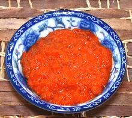
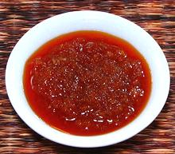
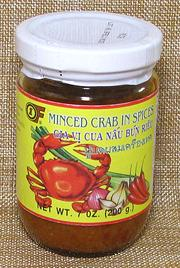
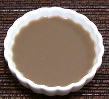
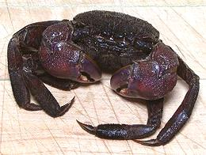
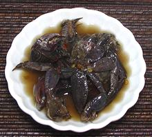
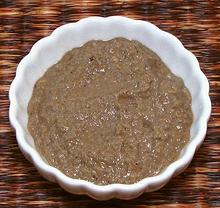
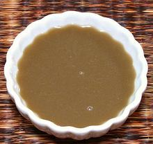
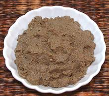
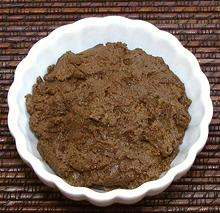

SAFARI
Users
Philippine Crab Paste
 [Taba ng Talangka, Aligue (Philippine)]
This product is made from the eggs (roe) of tiny crabs, which are inexplicably called "crab fat" in the Philippines. It is a very popular condiment / sauce used im various ways, especially on appetizers and in sauces for rice and pasta recipes. It definitely has the taste of crab eggs, not of fat. It takes countless thousands of tiny female crabs to produce this paste, but there is no shortage of the crabs in Southeast Asia.
Razon's Aligue and Navarro's Taba ng Talangka 100%
are prferred brands in the Philippines, but the brand available here in
Los Angeles is Tropica, which is a 100% brand. It is also distributed
in San Francisco. Keep it refrigerated at all times. The photo specimen
was purchased from a large Philippine market in Los Angeles (Eagle Rock)
for 2019 US $4.69 for an 8 ounce jar. Ingred: "crab fat", soya oil,
palm vinegar, pepper, annatto seed extract, FD&C Yellow #6 (Sunset
Yellow).
Thai Crab Paste
 [Gach Cua Xao Dau An]
This is a typical Thai crab paste by a leading Thai brand,
Pantai. According to the label, the crabs were caught in the Pacific
ocean. The bits of crab in the paste were surprisingly firm.
Ingr: Crab meat (60%), soya bean oil (28%), garlic, salt, pepper,
flavor enhancers (monosodium glutamate E621, disodium 5'inosinate E631,
disodium 5'guanylate E627) color (paprika oleoresin E160c)
Paddy Crab Pastes / Sauces
In Laos and the Issan region of Thailand, the rice paddies are infested with tiny freshwater crabs. They are disliked by farmers, because they eat young rice shoots. They are hard to get rid of because, when the paddies are dry, they just tunnel into the mud and hibernate until the water returns. On the other hand, they do provide a significant supplementary income for the rice farmers. The crabs are captured, salted and ground up into a seasoning paste that is well liked in Laos, Northeastern Thailand, and southern Vietnam. This paste is usually locally made and isn't much available in North America. These crabs are also sold fresh and unsalted for use in Vietnam's famous Bun Rieu Cua soup.
Rice Crab Sauce for Bun Reiu Soup

[Gia Vi Cua Nau Bun Rieu (Viet)]
So important is the Bun Rieu Soup, mentioned above, that pre-made sauces
are exported for use by Vietnamese in other countries where the raw
ingredients are hard to find. This sauce was made in Thailand, rather
than Vietnam, but this is reasonable. Thailand is a major manufacturer
of canned and bottled sauces and similar products for export, while
Vietnam is more known for exporting whole natural products. Ingred:
Water, onion, crab meat (18%), garlic, soybean oil, peanut, lemon
grass, chili, sugar, modified cornstarch E1422, monosodium glutamate
E621, salt, paprika natural color E160c.
Rice Crab Sauce
 [Nuoc Cot Cua Dong (Viet)]
This is a commercial product that recently showed up in the same freezer
case with the whole crabs and chopped crabs with sauce that were used
in the development described below. The white plastic tub held 1-1/2 cups.
Of that, 1-1/4 cup was water (83% water), and 1/4 cup was sediment, about
half very fine and half somewhat gritty. Made in Vietnam, Ing: Crab,
pure water. In my opinion, my homemade sauce is superior.
Making Rice Crab Pastes / Sauces
I've found incomplete information on making these pastes. I suppose the writers expect an English speaker would not want to do this and/or be unable to get the ingredients. Having studied everything I've found, I believe my procedures are adequately accurate, and I have made these pastes and sauces.
So, you ask, what does it taste like? In my opinion it tastes pretty good - fairly inoffensive, and definitely more crab flavored than similar murky fish sauces. My office assistant noticed a sort of "fishy" smell when I was concentrating the Laotian paste, but didn't find it objectionable.
Rice Paddy Crab [Boo Kem, Bpoo Kem (Thai, salted); Ba Khía Nguyén Con (Vietnam, salted)]
This is a salted rice paddy crab. I bought a tray with 14 ounces of
them from the freezer cases of a large Asian market in Los Angeles
(San Gabriel), 2017 US $3.56 / pound. They are up to 1-3/4 inches
across the shell. For use in Green Papaya Salad and the like, the
top shell is pried off and discarded along with the gills under it.
The rest of the crab is broken up and added to the salad. For pastes
and sauces, the whole crab is ground up. For details see our
Rice Paddy Crabs page.
Frozen Minced Crab [Ba Khia]
Some weeks after I bought the whole frozen salted crabs, the market
added 14 ounce tubs of "Frozen Minced Crab" to the same freezer case,
2017 US $3.41 / pound. "Minced" is hardly the word, they were just
very coarsely hacked apart as they would be for salads. These were
from Vietnam, and had quite a bit of sauce (or salad dressing)
included. Ing: Crab, water, salt, sugar, chili, garlic, vinegar.
Decisions
Grinding In Laos, the crabs would be pounded in a mortar, a project taking a lot of time and energy, so I used mechanical means. The specimen to the left in this paragraph was ground in a powerful food processor, but was just too gritty, so it had to be reground in a blender. As the blender grinds, you will need to add more and more water so it doesn't bog down and get overloaded. Smoke coming from the blender base is not a good sign. The resulting paste will always be a little gritty, but the grit should be very fine. Commercial products are a bit finer, but still gritty. In Vietnam  In Vietnam and parts of Thailand, this is as far as the process might go. The loose paste is strained to produce a liquid sauce (left photo), and the finely ground debris (right photo) is often used to make crab cakes. I wrung out the photo example in a strong muslin bag, making a very fine liquid with no grittiness, but strainers not quite so fine may also be used. The difference from making the broth for Bun Rieu
soup in Vietnam is that fresh crabs are used rather than salted and
frozen. Salted and frozen are the only ones we can get in North
America (California rice growers are very adverse to having
these crabs in their paddies). You could desalt the crabs by soaking,
but Unsalted crab juice needs to be used right away as it will spoil
quickly.
In Laos and Issan Thailand [Nam Bpo] In the countryside it is desired to have a crab paste that will last a long time without refrigeration, as the crabs are not readily available much of the year. For this reason, the ground crab paste is allowed to ferment overnight, then cooked very slowly in kitchen embers for about 24 hours, or until most of the water has evaporated and the paste is dark and very stiff. Not having kitchen embers available, I put the paste in an
open sauté pan and cooked over very low heat, stirring often
and carefully regulating the temperature. It should be kept above
165°F/75°C, but below 205°F/95°C. If it goes
much above 205°F in the early going it will bubble and splatter
without mercy, and in the later going it might burn. The object here
is not to fry the paste, but to dehydrate it. It should be a dark,
rather stiff paste, but should be taken off the heat and packed
before it becomes so dry it breaks up into crumbs. With precise
temperature control and frequent stirring it should take less than
6 hours. Kept in a sealed container, the paste needs no refrigeration.
My paste didn't come out nearly as dark as it often does in Laotian
homes, probably because of very precise temperature control.
|